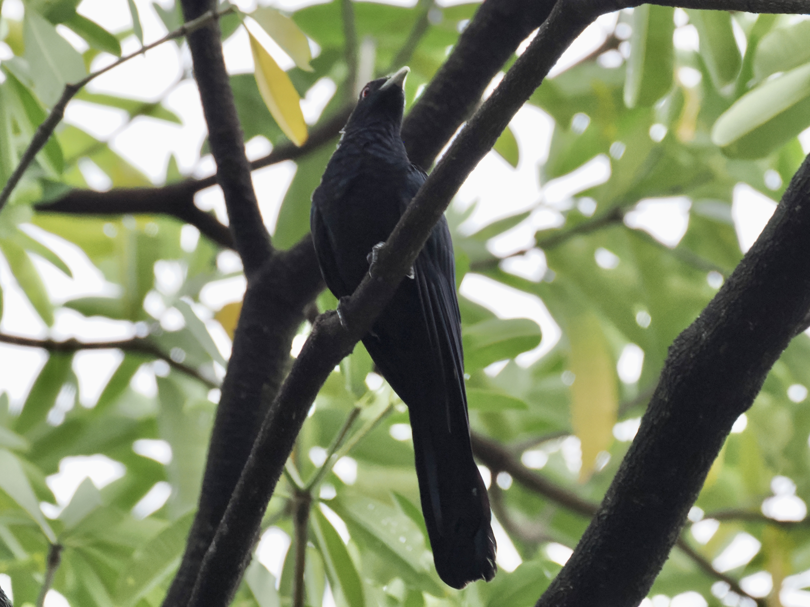
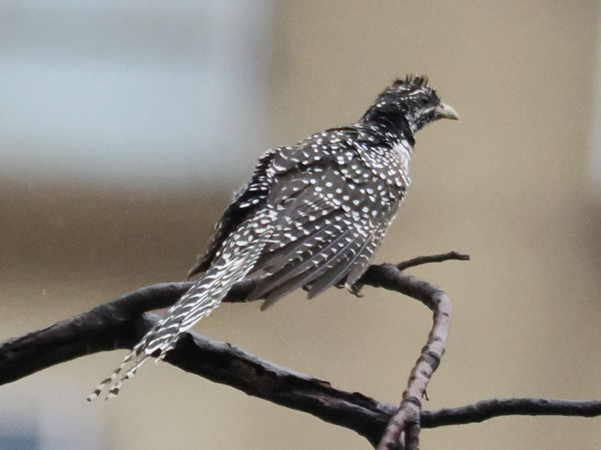
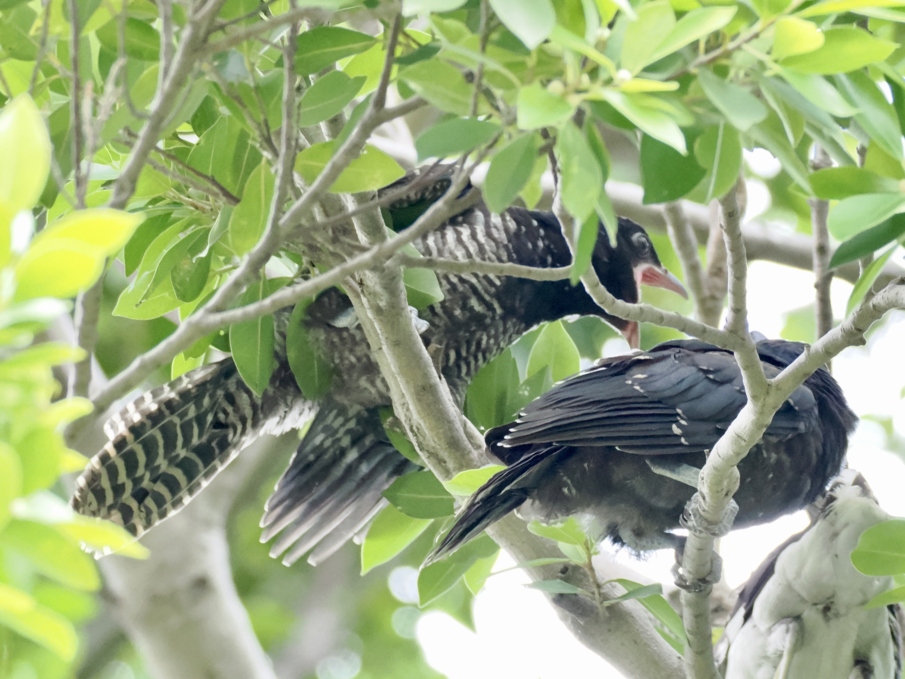

Asian Koel
Eudynamys scolopaceus

A long, slender cuckoo. Adults have red eyes. Adult male is black with a pale bill.

Female is mottled brown. This one is a juvenile (brown eyes).

Juvenile male is mostly black, but some streaking remains.

A brood parasite, the Koel lays eggs in other birds' nests. This baby is begging its "parent" for food.